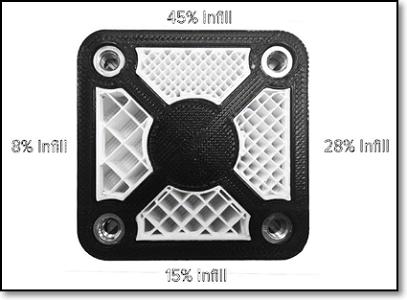
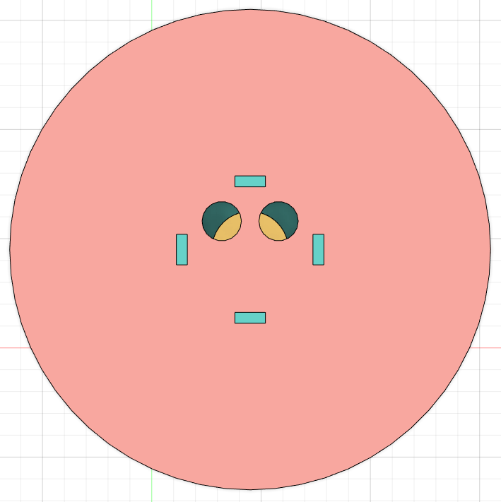
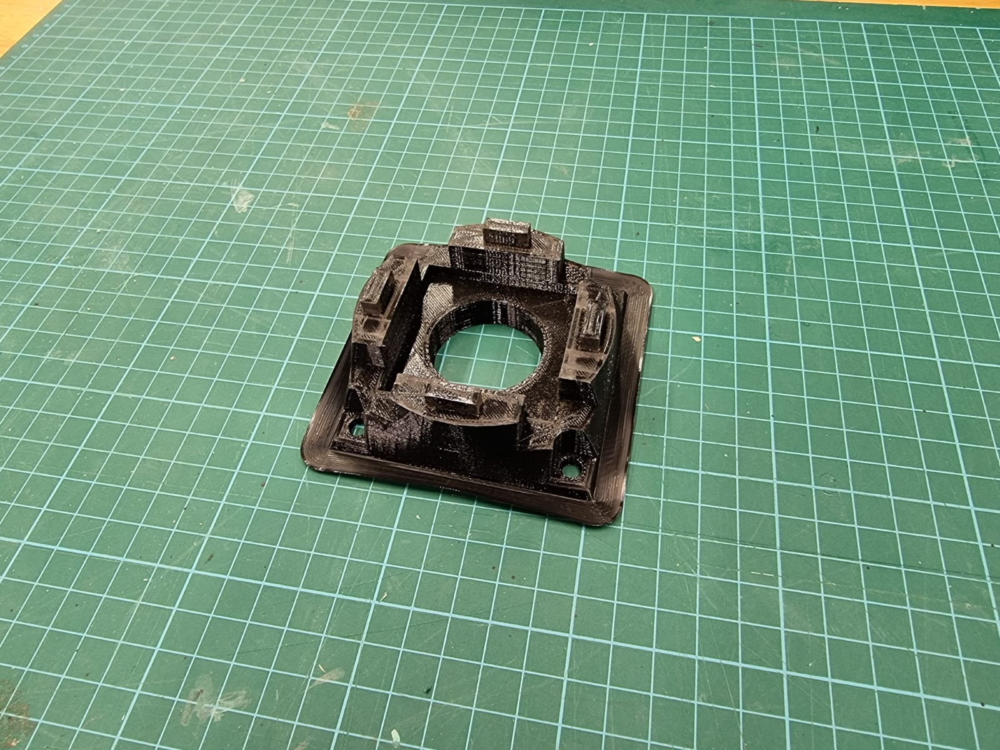
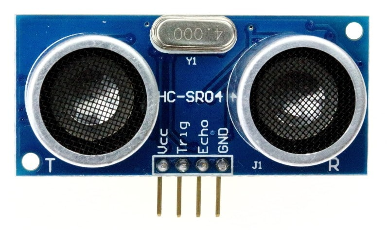

OVERVIEW
In this module i learnt how to use Digital Fabrication techniques in designing and creating prototypes. During the process i have also learnt how to document and publish my work continously and this can be found under the Assignments tab. I used Computer Aided Design techniques, 3D printing and laser cutting methods to develop my prototypes and complete my assignments.
ABOUT ME
Hello, my name is Razin Fahmi and I'm currently in my final year in Singapore Polytechnic studying under the Diploma of Mechanical Engineering. My current class is DME/FT/3A/01 and I'm specilising in Aerospace Engineering.

I've been leaning more towards the fabrication and manufacturing side of engineering, thus making me choose this elective module. Through EP1000, I was able to learn the basics of fabrication and prototyping through ways such as laser cutting, and hopefully, I can proudly apply these softskills in the future. I hope that through these efforts, I can widen my skillset and be a better Engineer.
ASSIGNMENTS
Safety FabLab
Before we were able to use any of the labs, equipments and machines for the module, there was a safety assessment that we had to score at least 90% to pass it. We had to watch a video and read through the safety issues in the lab where we learnt on the things we were allowed and not allowed to do in the in lab. After going through the necessary videos and slides, we then took the safety assessment to ensure we understood the requirements to use the labs.
From the videos, slides and assessment, I learnt about:
-> General lab and workshop safety procedures such as, only work in the lab when there is supervision from either a lecturer or the technical support officer, and do not use any machinery without permission.
-> Dress code when in lab to protect from injuries.


-> Hazard symbols and Personal Protective Equipment (PPE) Symbols and understanding their risk levels.

-> Safety and Regulations in the FabLab and Workshops such as, do not lean on any moving parts when the machine is in operation, and never clear chips when the spindle is rotating.
-> Emergency Procedures such as contacting the SP Emergency hotline, 6772-1234, or the ambulance, 911.
Website Development
To start off the website development, we were tasked to watch a video by Jake Wright on 'HTML and CSS in under 12 minute' to understand the basics of developing our own website.
Typically, HTML and CSS is coded in a text editor such as Sublime Text 3, Notepad++, and Visual Studio Code. Personally, I prefer the Sublime Text 3 as it is a simple, free, and open source that is beginner friendly. As for version control of the website, we were told to use Github.
HTML
HyperText Markup Language (HTML) is the standard language used for documents to be displayed as a website. It also describes the structure of information displayed on the website. In other words, HTML is were you edit all the text and things you want to document on a page.
HTML consists of elements such as header, paragraphs, bullet points and numbered list, which are then presented in form of tags like h1, h2, h3 for headers, p for paragraphs and many more. These elements are mainly defined by being in <>.
To start off, create a text document and name it index, then save the file to a .html file.
As you can see at the top left, the file has now become a .html file named index.html. The format above is also how the base of my HTML code would look like before I start to add any content.
The file location for the importing images is also important as without it, the text file will not know where to call for the images from and they cannot recognise it. Do also keep in mind of the name of the images as the code is cap sensitive, for example, selfie.png and Selfie.png can be interpreted differently by the code.
CSS
HTML files is not enough to create a fancy webpage, and that is where CSS comes in. Cascading Style Sheet (CSS) is a language used to describe how the html file will be presented. CSS helps to format the website to make it aesthetically pleasing and organised.
Some common formatting areas of CSS includes:
-> Width: defined by x amount of px (pixel) for images.
-> Padding: top px, bottom px, left px, right px, which defines the spacing between each division.
-> Margins: margin-left and margin-right by x amount of px will align each division to the left or the right.
-> Background Colour: #XXXXXX, defined by a hexadecimal colour code.
-> Font Family: defines the font that will be used throughout the website.
To start designing the website, create a text document and name it stylesheet, then save the file to a .css file. Link the HTML file (index.html) to the CSS file (stylesheet.css). In the CSS file, edit accordingly to design the website's layout.

Specify the sizes of each part of the website in pixels and assign the appropriate padding. Format the rest of the website by making aesthetic changes to the background, font family, etc.
This is what the preview of the html file would look like on web browser.
Github
Version control is very important as it allows for mistakes made in the codes to be reversible without having to go back to the text document to delete codes or text from the latest version of the code. This makes it less troublesome and more efficient to deal with the mistakes done on the code. Through version control, you can simply revert back to the previous version without the said mistakes with just a click of a button.
This is where Github plays its part. Github is an open-sourced distributed version control system which allows for revision of your codes. Github allows for multiple people to work on a single project at the same time. This project will be pushed onto a remote repository that can be accessed on their website. Github also allows you to retrieve the repository from their website and edit it locally on your personal computers.
Github desktop allows you to see the changes made to the repository and will notify the user if any changes were made, when and by who. You can also select the change you would like to keep or discard by using the checkboxes by the side, or right clicking it and click discard changes. If you are satisfied with the changes made, you can click “commit to main” in the bottom left hand corner to upload the changes into the local repository.

When you are ready to copy the changes to the remote repository at git, click push origin at the top right hand corner to copy the changes over. The changes will then be reflected in the history section of Github Desktop.

If you would like to take back some changes that you hasve already pushed, you can simply right click the changes made in the history, and click revert this commit. This returns the previous version before the changes was made. Make sure to push to the origin again to confirm the revert.

3D Printing & Modelling
3D printing is a type of additive manufacturing that creates 3D objects from a digital 3D models. This uses softwares such as Fusion 360 and CURA to make this successful. However, 3D printing cannot be done without the printers.
In the Fablab, one of printers available for students to use is the Ultimaker 2+, which uses Fused Filament Fabrication with PLA plastic as the print filament. The said filament would be heated to be deposited onto layers that stacks on one another to create a 3D object.
3D printing is widely accessible to the public, anyone can simply create or download a model and print almost anything. 3D print is also ideal and useful for rapid prototyping.
However, there are disadvantages to using 3D printing such as the slow printing process as compared to conventional manufacturing and the cost as it might use up a lot of material. Evident from the way 3D objects are printed, they are not heat resistance and do not have the strength as actual products. As for finishing, 3D printing is not a viable option for objects as it does not produce smooth finishing.
As such, there are several properties and considerations to take note of when 3D printing:
-> Layer height - Controls the height of each layer of plactic deposited. Thinner layers give smoother finish and finer prints with higher resolution, but printing time will be longer as there are more layers.

-> Wall thickness - Controls the number of strands requird for the thickness of the wall. This affects the printing time and overall strength of the final product as thinner walls would make it fragile.

-> Infill percentages - Controls the amount of material that fills the internal features of the 3D object. While it is definitely possible to print the object as a whole solid product, it would be a waste of materials and time, thus a repetitive structure is used to fill the otherwise empty space. Infill percentage affects the weight, strength and printing time of the model. Having higher infill percentage increases the weight of the print and makes it stronger, but it will take more time to print. Not only that, there are also many different infill patterns available.

-> Overhang and supports - Overhang affects wether the print needs supports and to avoid supports, an overhang of 45 deg is the limit. If it is unavoidable, supports can be removed after the print is complete. Changing the orientation of the print also helps to avoid using supports, such that the parts are no longer suspended.

-> Bed adhesion - The print bed is usually heated to improve adhesion. Sometimes, the print object requires help in adhering to the print bed. Some common bed adhesion used are, Skirt; used to outline the print base and no bed adhesion, Brim; allow some adhesion to the print perimeter, Rafts; uses full platforms on which the 3D print is placed where the print adhesion is onto the raft instead of the bed.

Knight Piece
The knight piece was an interesting model to do as it allows me to use several functions of Fusion 360 such as revolve and spline to perfect the model. This 3D print was also great to display how overhang affects the amount of support it needs for printing.
To start modelling the knight piece, I went online to find a photo of a knight piece that I could refer to to start with the sketch.
With the help of the photo above, I was able to model the knight piece with the specific dimensions given to me, which was base = 30mm, height = 50mm and head thickness = 5mm.
The 3D model was then converted into an STL file to be uploaded into Ultimaker CURA, a slicing software. This software will dictate the settings of our print as well as convert it into a G-Code for the printer to understand and print.
The following is how the printing product turned out.
Overall, this project was essential for me to show my understanding of 3D printing and being able to do it myself makes this a good experience. The small printing size makes the printing time fast. Its small size also makes it hard to remove the supports produced, however, filings and pliers can be used to remove the supports. Other than the parts where supports were removed, the finishing was good, especially the base.
From this exercise, I also learnt that I should keep in mind of the nozzle size and the properties chosen for printing so as to avoid the same mistake of not being able to print detailed parts, such as the knight top ears where my 3D model has a space between the two ears but when printed, a blob of the printed filament was produced instead, leaving no spaces between the said ears.
TinkerCAD
TinkerCAD is a software where you can design circuits digitally using electronics such as Arduino and breadboard. This will help us test the circuit before wiring them up on breadboard, thus preventing any uncertainty towards the fear of doing something wrong while doing it for the first time.
Arduino
Arduino is an open-source electronics platform based on easy-to-use hardware and software. Its affordability and easy to use system makes it ideal when implementing embedded systems into projects.
The hardware consist of the Arduino Uno, which is a microcontroller, resistors, wires, LEDs, buttons and etc. For the embedded programming assignments, we use an Arduino Uno to interface several I/O (Input and Ouput) devices.
Input Devices
-> Switches
-> Temperature, humidity sensor
-> Ultrasonic distance sensor
-> Motion detection sensor
-> Light measurement and detection sensor
-> Time
-> Rotary encoders
-> Weight sensor
-> Water sensor
-> Arduino sensor kit
Output Devices
-> Single LEDs
-> RGB LEDs
-> Seven segment displays
-> LCD displays - 1602
-> Others (includes NeoPixel LEDs)
The following are the things we did in class:
-> Simple LED Blink

-> Push Button to Turn on LED

-> Toggle Push Button Input
-> RGB Output

FINAL PROJECT
Final Project Idea
As I was searching for ideas online on the things I can do for my final project, I came across a table lamp that looks like it was levitating. This caught my attention especially due to its intriguing light that was used to amplify its 'levitating' idea.
Instead of having the spherical object to be placed at the top, I wanted it to function such that when something is placed on the top platform, the colour changes. When thought thoroughly, I tought it was best for its purpose to be a phone holder when the phone is charging. The light will then change to red colour to indicate that the phone is charging, and stay red even if it is fully charged. To change the colours, I just have to remove the phone from the top platform.
For it to function, I decided to use a HC-SR04 Ultrasonic Distance Sensor for the sensor, and Neopixels for the actuators. It will work by activating the Neopixels to red in colour when the measured distance is lesser than 60mm. When the measured distance is more than 60mm, the Neopixels will be in in rainbowish colours, indicating nothing is on the top platform. The HC-SR04 Ultrasonic Distance Sensor would be orientated facing upwards on the top platform. The top platform was made with two holes to allow the HC-SR04 to work well and not disrupt the phone's placement on the top platform. I also wanted to implement a button which changes the colour between rainbow, blue, green and yellow when the measured distance is more than 60mm. On this note, the colour red for when the measured distance is lesser than 60mm will not be affected by the press of the button.
Bill of Materials
This is the list of materials I would need to make this project.
Designing
Using Fusion 360, I digitally made my own model design for the final project. I wanted to have the top platform to be bigger than the bottom part of the built, so I kept that in mind. For my first attempt, this was how it turned out.
From the first 3D model that I made, I found it to be too big and some parts are irrelevant, and changes could be done to make my final project better. After some fine tuning, I ended up with the following 3D model for printing.

With most of the built being made from the 5mm thick wood, the support for the top platform (blue in colour in the photos above), was 3D printed with the help of the Ultimaker 2+.
Printing
After designing, the models were converted into dxf files and stl files to be sent for laser cutting and 3D printing respectively. Following was how the final cut and 3D print turned out.

With the help of hot glue and four M5 x 12 screw and nuts, the wooden pieces and printed support were then assembled together. Holes were also drilled onto one of the sides of the wooden pieces to allow way for the cable and the button to access the electronics inside.
Electronics
As mentioned before, I would be using the HC-SR04 Ultrasonic Distance Sensor, Neopixel and toggle button to help make this project work. This was all readily available in SP FabLab for students to use.

With reference to my online research, I was able to come up with the following Arduino code which was able to make the electronics chosen to work well together.
//**Project Distance**//
//**Objectives:**//
//**1.Use Ultrasonic Sensor to Detect Distance**//
//**2.If Obstacle is within 60mm,Turn NeoPixel Strip Red**//
//**3.If Obstacle is more than 60mm, Activate Rainbow. Upon Button Press Change to individual color**//
//**Include Adafruit NeoPixel Library**//
#include Adafruit_NeoPixel.h
//**Define Trig and Echo Pins**//
#define echoPin 2
#define trigPin 4
#define PushButton 6
//**Define Led Pin and Number of NeoPixels**//
#define LED_PIN 7
#define LED_COUNT 8
//**Define Variables for distance and duration for Ultrasonic**//
long duration;
int distance;
//**Define Button State**//
int ButtonState;
//**Declare our NeoPixel strip object**//
Adafruit_NeoPixel strip(LED_COUNT, LED_PIN, NEO_GRB + NEO_KHZ800);
void setup() {
//**Initialize Serial Monitor at a baud rate of 9600**//
Serial.begin(9600);
//**Initialize NeoPixel strip object**//
strip.begin();
//**Turn OFF All Pixels**//
strip.show();
//**Set Brightness to 50 due to Low Current**//
strip.setBrightness(200);
//**Declare Push Button as Input**//
pinMode(PushButton,INPUT_PULLUP);
}
void loop() {
//**Call CheckPath to get Ultrasonic Sensor Reading**//
CheckPath();
}
void CheckPath() {
//**Clears the trigPin condition**//
digitalWrite(trigPin, LOW);
delayMicroseconds(2);
//**Sets the trigPin HIGH (ACTIVE) for 10 microseconds**//
digitalWrite(trigPin, HIGH);
delayMicroseconds(10);
digitalWrite(trigPin, LOW);
//**Reads the echoPin, returns the sound wave travel time in microseconds**//
duration = pulseIn(echoPin, HIGH);
//**Calculating the distance**//
//**Speed of sound wave divided by 2(back&forth)**//
distance = duration * 0.034 / 2;
//**Displays the distance on the Serial Monitor**//
Serial.print("Distance: ");
Serial.print(distance);
Serial.println(" cm");
//**If Distance is Less than equal to 2 turn neopixel red**//
if (distance <= 6) {
RedWarning();
}
if (distance > 6){
RainbowEffect();
}
}
void RedWarning(){
//**Set ButtonState to 0**//
ButtonState = 0;
//**RGB(255,0,0) is RED**//
colorWipe(strip.Color(255, 0, 0), 0);
}
void RainbowEffect(){
//**Check For Button Pushes and Set Appropriate Color according to ButtonState**//
//**Break out of the loop if button is Pressed**//
Serial.print(ButtonState);
if(digitalRead(PushButton)==LOW && ButtonState==3){
//RainbowEffect();
ButtonState = 0;
delay(500);
}
if(digitalRead(PushButton)==LOW && ButtonState==2){
ShowYellow();
delay(2000);
ButtonState = ButtonState + 1;
}
if(digitalRead(PushButton)==LOW && ButtonState==1){
ShowGreen();
delay(2000);
ButtonState = ButtonState + 1;
}
if(digitalRead(PushButton)==LOW && ButtonState==0){
ShowBlue();
delay(2000);
ButtonState = ButtonState + 1;
}
if(ButtonState == 0){
for(long firstPixelHue = 0; firstPixelHue < 5*65536; firstPixelHue += 256) {
for(int i=0; i strip.numPixels(); i++) {
int pixelHue = firstPixelHue + (i * 65536L / strip.numPixels());
strip.setPixelColor(i, strip.gamma32(strip.ColorHSV(pixelHue)));
}
strip.show();
delay(1);
}
}
}
void colorWipe(uint32_t color, int wait) {
//**Set Color of Each Pixel with assigned delay**//
for(int i=0; i strip.numPixels(); i++) {
strip.setPixelColor(i, color);
strip.show();
delay(wait);
}
}
void ShowGreen(){
//**RGB(0,255,0) is Green**//
colorWipe(strip.Color(0, 255, 0), 0);
}
void ShowBlue(){
//**RGB(0,0,255) is Blue**//
colorWipe(strip.Color(0, 0, 255), 0);
}
void ShowYellow(){
//**RGB(255,255,0) is Yellow**//
colorWipe(strip.Color(255, 255, 0), 0);
}
With all the wirings plugged into the respective ports and the Arduino Uno connected to the Arduino code, this was how it turned out.

Results
results part with video and slides.
In all, it was an enjoyable and fulfilling experience for my first Digital Fabrication and Prototyping project, especially since it works as intended. Despite the problems faced completing the project, it was very achievable until the very end. Given another opportunity to redo my workpiece into a better one, I am sure to improve it in ways such as enlarging the space to store the wirings, or reducing the stand heights to make the object smaller, or many more.
Special thanks to Mr Rodney for his patience and guidance throughout the entire 20 weeks of learning something brand new and useful to me for my engineering journey.